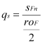

|
|
|


警告："切口参数 qs …. 超出 RANGE (1.0 到 8.0) ..."
应力修正因子 YS（YS）是根据符合 ISO 6336，第3部分或 DIN 3990，第3部分的公式计算的。该公式使用一个切口参数 qs，该参数也记载在这些标准中。
 | (23.4) |
按标准规定的 YS 公式的有效范围在 1.0 ...qs... 8.0 范围内。不应在此范围之外使用此公式。
如果 qs < 1，YS（按 qs=1 计算）会偏大。在这种情况下，计算结果将落在有效范围内。
如果 qs > 8, 则 YS 将更大（比使用 qs= 8 计算的值大）. 在这种情况下，计算结果落入无效范围，且 Ys 因此使用有效的 qs值(>8).
在每种情况下，如果 qs 超过或低于 1 到 8 的范围，报告中将发出警告。此报告还显示哪个 qs值被进一步用于计算。
注意：
如果您想更改此处描述的过程，可以在设置（STANDARD.Z12 文件等）或已保存的文件（.Z12 等）中进行。为此，请用记事本打开文件并更改这一行：
ZS.qsLIMIT=0;
至：ZS.qsLIMIT=1;（qs 不变）
或改为 ZS.qsLIMIT=2;（当 qs <1 时设置为 qs=1，当 qs >8 时设置为 qs=8）。
Warning: "Notch parameter qs …. outside RANGE (1.0 to 8.0) ..."
The stress correction factor YS Stress correction factor YS is calculated with a formula that complies with ISO 6336, Part 3 or DIN 3990, Part 3. This formula uses a notch parameter qs , which is also documented in these standards.
(23.4) |
The validity range for the formula for YS in accordance with the standard lies in the range 1.0 ...qs... 8.0. This formula should not be used outside of this range.
If qs < 1, YS(calculated with qs=1), should be rather too large. In this case, the calculation results will fall in the validity area.
If qs > 8, then YS will be rather larger (than calculated with qs= 8). In this case, the calculation results fall into the invalid range, and Ys is therefore calculated with the effective qsvalue (>8).
In each case, if qs exceeds, or falls below, the range 1 to 8, a warning is entered in the report. This report also shows which qsvalue was used further on in the calculation.
Note:
If you want to change the procedure described here, you can do this either in the setup (STANDARD.Z12 file, etc.) or in a saved file (.Z12, etc.). To do this, open the file in Notepad and change this line:
ZS.qsLIMIT=0;
to: ZS.qsLIMIT=1; (qs is not changed)
or to ZS.qsLIMIT=2; (qs<1 is set to qs=1, qs>8 is set to qs=8).